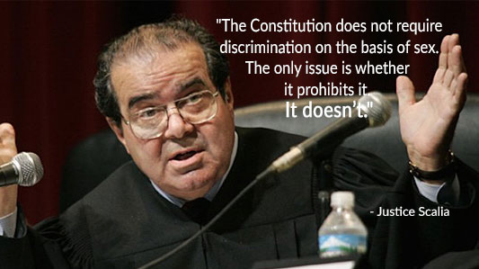

<div class="w3-container" style="padding: 20px; max-width: 800px; margin: auto;">
   <div class="w3-row zonta-p-container">
      <div class="w3-col s12" style="text-align: center">
         <h1 style="font-size: 3.4em;">Equal Rights Amendment – ERA Ratification</h1>
      </div><br />
      <div style="margin-top: 40px;">
         <div class="w3-col s12 m6">
            <div class="w3-col s12" style="text-align: center">
               <h3>How to Ratify the ERA</h3>
            </div><br />
            <ol>
               <li>38 States to Ratify: TWO More needed</li>
               <li>Remove the Deadline for Ratification in the Senate</li>
               <li>Send it to the Supreme Court</li>
               <li>WIN Equal Rights for Women Under the constitution</li>
            </ol>
            <p>Each year from Nov 25th to Dec 10, Zonta observes 16 Days of Activism Against Violence Against Women</p>
            <div class="w3-container w3-display-container" style="min-height: 150px;">
               <button type="button" mdbBtn mdbWavesEffect class="w3-display-middle w3-round-xlarge zonta-red"
               onclick="window.open('https://zontasaysno.com/')">
                  RATIFY THE ERA
               </button>
            </div>
            <!-- <p>The Clubs in Zonta’s District8 engage in Service and Advocacy to End Violence Against Women.</p> -->
         </div>
      </div>
      <div style="margin-top: 40px;">
         <div class="w3-col s12 m6" style="margin-top: 20px;">
            
         </div>
      </div>
      <div class="w3-row">
         <div style="margin-top: 40px;">
            <div class="w3-col s12 m6" style="padding: 5px 25px">
               <div class="w3-col s12" style="text-align: center">
                  <h3>Equal Rights Amendment -Three State Strategy</h3>
               </div><br />
               <p>
                  Illinois ratified the ERA in June 2018. With Nevada ratifying the Equal Rights Amendment in March 2017, 
                  there is only one more state needed to Ratify the ERA to make it part of the Constitution.  Zonta Clubs 
                  across the US are working to help with state level ratification, and to encourage their Senators and 
                  House Representatives to cosponsor the bills to remove the deadline for Ratification.
               </p>
               <!-- <p>
                  More on the Legal Strategy behind this approach.
               </p> -->
               
            </div>
         </div>
         <div style="margin-top: 40px;">
            <div class="w3-col s12 m6" style="padding: 5px 25px">
               <div class="w3-container w3-border-black">
                  <h3>The 14 States that Have Not Ratified the Equal Rights Amendment</h3>
                  <ul>
                     <li>Alabama</li>
                     <li>Arizona</li>
                     <li>Arkansas</li>
                     <li>Florida</li>
                     <li>Georgia</li>
                     <li>Lousiana</li>
                     <li>Mississippi</li>
                     <li>Missouri</li>
                     <li>Nevada</li>
                     <li>North Carolina</li>
                     <li>Oklahoma</li>
                     <li>South Carolina</li>
                     <li>Utah</li>
                     <li>Virginia</li>
                  </ul>
               </div>
            </div>
         </div>
      </div>
      <div class="w3-row" style="margin-top: 40px;">
         <div class="w3-col s12 m6" style="padding: 5px 25px;">
            <h3>Why do we need the ERA</h3>
            <p>
               The Equal Rights Amendment will guarantee equal status under the law and 
               provide bedrock legal protection when women—or men—face sex discrimination.
            </p>
            <p>Protection would cover:</p>
            <ul>
               <li>Lack of equal pay for equal work</li>
               <li>Pregnancy discrimination</li>
               <li>Violence against women</li>
               <li>Other forms of sex discrimination</li>
            </ul>
            <p>State laws are not uniform and federal laws are not comprehensive.</p>
            <p>These laws can be, and often have been, weakened or repealed by a single vote.</p>
            
         </div>
         <div class="w3-col s12 m6" style="padding: 5px 25px;">
            <h3>Remove the Deadline for ERA Ratification:</h3>
            <p>38 States are needed, then Congress can remove the deadline. Here is the latest update on the Federal Bills in 2019/2020:</p>
            <iframe id="govtrack:widget:bill:116:sjres6:iframe" src="https://www.govtrack.us/congress/bills/116/sjres6/widget.html" width="100%" frameborder="0"></iframe>
            <iframe id="govtrack:widget:bill:116:hjres38:iframe" src="https://www.govtrack.us/congress/bills/116/hjres38/widget.html" width="100%" frameborder="0"></iframe>
            <iframe id="govtrack:widget:bill:116:hjres35:iframe" src="https://www.govtrack.us/congress/bills/116/hjres35/widget.html" width="100%" frameborder="0"></iframe>
         </div>
      </div>
      
   </div>
</div>
